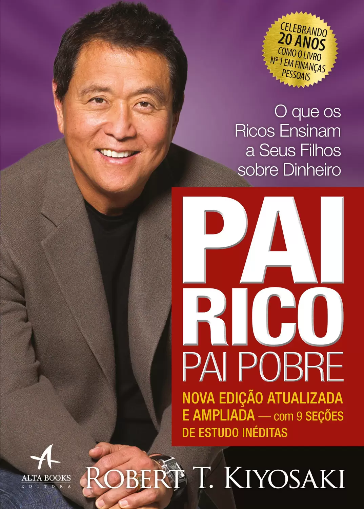

Pai rico, pai pobre

Um dos livros mais falados da última década, abriu os olhos do mundo para a necessidade de pensar o planejamento de finanças pessoais. Pai Rico, Pai Pobre foi o primeiro best-seller de Robert T. Kyiosaki e Sharon Lechter, e deu origem a uma série de enorme sucesso. Seu conceito é muito simples: com maior inteligência financeira muitos problemas comuns da vida cotidiana podem ser resolvidos. Saiba o que os ricos tratam como ativos geradores de renda, e como se livrar de pagar impostos demais. A cada dia, a cada nota você escolhe ser rico, pobre ou classe média. A melhor maneira de preparar seus filhos para o mundo é dividir esse conhecimento com eles. Se você não fizer isso, ninguém mais fará. Determine o destino do dinheiro que chega às suas mãos.
Clique para ser redirecionado para o link de Download